Morte de devedor antes da citação
Morte de devedor antes da citação impede redirecionamento da execução fiscal ao espólio, confirma STJ em repetitivo Sob…
Ler matéria →Decisões dos tribunais, novidades legislativas e a participação do escritório em eventos e instituições. Acervo completo com 310 publicações desde 2016.
310 publicações
Morte de devedor antes da citação impede redirecionamento da execução fiscal ao espólio, confirma STJ em repetitivo Sob…
Ler matéria →
⚖️ Nesta sexta-feira, dia 21/08, o V Congresso ANAMEL – Justiça Servidora reuniu importantes nomes do meio jurídico no…
Ler matéria →
É possível partilha amigável com divisão desigual dos quinhões hereditários, decide Terceira Turma A Terceira Turma do Superior…
Ler matéria →
Primeiro repetitivo julgado em sessão totalmente virtual define requisitos para justiça gratuita a pessoas jurídicas Em julgamento inédito…
Ler matéria →
➡️ A conselheira Claudia Padoan, integrante da Mesa Diretora do Colegiado Intermunicipal dos Conselhos de Direitos das Mulheres do…
Ler matéria →
99 indenizará homem que teve CPF utilizado em cadastro como motorista da plataforma Dados pessoais foram utilizados indevidamente…
Ler matéria →
Mulher é condenada por estelionato praticado contra idosa Prejuízo de cerca de R$ 15 mil. A 3ª Câmara…
Ler matéria →
Danos por fatores externos e risco de desmoronamento. A 1ª Câmara de Direito Privado do Tribunal de…
Ler matéria →
Negado acesso de mãe a conta em rede social de filho falecido Proteção do direito à privacidade…
Ler matéria →
A Terceira Turma do Superior Tribunal de Justiça (STJ) decidiu, por unanimidade, que o fato de o contrato de…
Ler matéria →
Sim, depois de anos pagando, reformando ou vivendo com sua familia, o imóvel pode se tornar um grande problema…
Ler matéria →
OAB SP garante no CNJ que sustentação oral seja respeitada pelo TJSP Decisão cautelar do Conselho acolhe pedido…
Ler matéria →Quarta Turma invalida prisão de devedor de alimentos intimado pelo WhatsApp Em julgamento de habeas corpus, a Quarta Turma…
Ler matéria →STJ fixa critérios para uso de medidas atípicas na execução civil A Segunda Seção do Superior Tribunal de…
Ler matéria →
Corte Especial do STJ admite sustentação oral em agravo contra indeferimento liminar de recurso A Corte Especial do…
Ler matéria →
✅ No Sescon-SP, o Dr. Dennis Pelegrinelli apresentou a palestra “Reforma Tributária: Navegando a Nova Realidade Fiscal Brasileira”. ➡…
Ler matéria →Passagem aérea pela internet: relator dá sete dias para desistência com devolução do dinheiro A Quarta Turma do…
Ler matéria →✅ O 3º Congresso do Fórum Nacional de Recuperação Empresarial e Falências (FONAREF) contou com a participação da Dra…
Ler matéria →A Terceira Turma do Superior Tribunal de Justiça (STJ) decidiu que, na hipótese de penhora de bem indivisível, a…
Ler matéria →Saiba como funcionará o novo modelo de julgamento virtual nos órgãos colegiados do TJSP Modalidade disponível a…
Ler matéria →🏆 O Dr. Dennis Pelegrinelli, sócio do escritório Pelegrinelli & Padoan, será homenageado (14/10/11) na Câmara Municipal de Guarulhos…
Ler matéria →Falta de comprovação de dissolução da empresa impede sucessão processual pelos sócios Para a Terceira Turma do Superior…
Ler matéria →DEMORA NO AGENDAMENTO DO CATETERISMO – INDENIZAÇÃO ✅ O Tribunal de Justiça de São Paulo manteve a decisão que…
Ler matéria →Recarregar, expandir e inovar: a sua advocacia em movimento. ✅ Hoje, 18/09/25, o Dr. Dennis Pelegrinelli esteve presente no…
Ler matéria →Plenário proíbe exigência de certidões negativas para registros públicos de imóveis O Conselho Nacional de Justiça (CNJ) reafirmou…
Ler matéria →Direito real de habitação impede extinção do condomínio e alienação do imóvel A Terceira Turma do Superior Tribunal…
Ler matéria →Corte Especial fixa teses sobre uso da fundamentação por referência em decisões judiciais Em julgamento sob o rito…
Ler matéria →✅ No dia 16 de agosto de 2025, no Hotel Mercure em Guarulhos, o Dr. Dennis ministrou uma palestra…
Ler matéria →TJSP mantém alienação de imóvel e “aluguel compensatório” a irmão que não usufrui do bem. Propriedade dividida…
Ler matéria →Terceira Turma admite partilha de bem superveniente requerida após a contestação na ação de divórcio A Terceira Turma…
Ler matéria →Estão oficialmente abertas as consultas públicas à Central de Escrituras e Procurações (CEP), base de dados que reúne mais…
Ler matéria →STF decide que PIS/Cofins integram base de cálculo da contribuição previdenciária sobre receita bruta Em matéria com repercussão…
Ler matéria →A Quarta Turma do Superior Tribunal de Justiça (STJ) decidiu, por unanimidade, que o único imóvel residencial do espólio, ocupado…
Ler matéria →Por unanimidade, a Terceira Turma do Superior Tribunal de Justiça (STJ) decidiu que é incabível o reconhecimento de união…
Ler matéria →✅ A Reforma Tributária foi o tema central da palestra realizada no auditório do escritório Pelegrinelli & Padoan, dia…
Ler matéria →
A Terceira Turma do Superior Tribunal de Justiça (STJ) decidiu, por unanimidade, que o arrendatário rural que tem direito…
Ler matéria →✅ A 6ª câmara de Direito Privado do TJ/SP reconheceu, por unanimidade, o direito de um homem à usucapião…
Ler matéria →De acordo com a jurisprudência do Superior Tribunal de Justiça, a Lei 14.195/2021, que alterou regras sobre a prescrição…
Ler matéria →✅ A Dra. Claudia Padoan e demais membros da diretoria do Conselho Municipal de Políticas para Mulheres de Guarulhos…
Ler matéria →Por Claudia Padoan, Sócia do escritório Pelegrinelli e Padoan Advogados A Norma Regulamentadora nº 1 (NR-1), criada em 1978…
Ler matéria →A Primeira Seção do Superior Tribunal de Justiça (STJ), sob o rito dos recursos repetitivos (Tema 1.158), fixou a tese de…
Ler matéria →Honorários advocatícios têm preferência em relação a crédito tributário, decide STF Entendimento foi firmado em recurso com repercussão…
Ler matéria →Deixar de entregar carteira de trabalho para não perder Bolsa Família condena por má-fé e obriga ressarcimento Sentença…
Ler matéria →Esgotados os meios típicos de satisfação da dívida, a magistrada destacou que a medida coercitiva é necessária para assegurar…
Ler matéria →Mesmo que seu papel na cadeia de fornecimento se limite à venda de passagens, as agências de turismo não…
Ler matéria →Reparação de mais de R$ 62 mil. A 13ª Câmara de Direito Público do Tribunal de Justiça de…
Ler matéria →
Uso do salário mínimo para indexar contrato não basta para afastar mora por falta de pagamento A Terceira…
Ler matéria →Tribunal negou recurso de devedor e reafirmou legalidade das medidas coercitivas. A 12ª câmara de Direito Privado do…
Ler matéria →
Relator argumentou que relação contratual civil não configura vínculo empregatício, ressaltando legalidade da terceirização. Ministro Nunes Marques cassou decisão…
Ler matéria →A Terceira Turma do Superior Tribunal de Justiça (STJ) reafirmou o entendimento de que o termo inicial de…
Ler matéria →A 4ª Turma do TRT da 2ª Região reformou sentença e autorizou o envio de ofícios para que…
Ler matéria →
Ministro Gilmar Mendes considerou que provimento do CNJ sobre o tema contrariou a intenção do legislador de fomentar a…
Ler matéria →
➡ Objeção da Consciência. Esse foi o tema do 5º Congresso do Instituto Brasileiro e Religião, que teve como…
Ler matéria →
A 1ª Câmara Reservada de Direito Empresarial do Tribunal de Justiça de São Paulo rejeitou alegação de uso indevido…
Ler matéria →Relatora concluiu que a conduta da construtora, ao retardar o registro do contrato por mais de dois anos, violava…
Ler matéria →➡ Os sócios do escritório Pelegrinelli e Padoan receberam láurea de agradecimento pelas autuações realizadas no G-20 Brazil de…
Ler matéria →A Primeira Turma considerou que o doador não teve acréscimo patrimonial. A Primeira Turma do Supremo Tribunal Federal (STF)…
Ler matéria →A Quarta Turma do Superior Tribunal de Justiça (STJ) reafirmou o entendimento segundo o qual a regra que…
Ler matéria →Especialistas dizem que isso abre as portas para que outros casais consigam tirar a cobrança do imposto na hora…
Ler matéria →Equilíbrio da relação jurídica entre as partes. A 1ª Câmara Reservada de Direito Empresarial do Tribunal de…
Ler matéria →O Conselho Nacional de Justiça (CNJ) aprovou, nesta segunda-feira (30/9), novas regras com o objetivo de reduzir a litigiosidade…
Ler matéria →A Sexta Turma do Superior Tribunal de Justiça (STJ), por unanimidade, decidiu que a intimação por aplicativo de mensagens como o…
Ler matéria →
Para a Terceira Turma do Superior Tribunal de Justiça (STJ), a adjudicação de bem penhorado só é válida…
Ler matéria →Tributação ocorrerá apenas no momento da venda das ações, com ganho de capital. A 1ª seção do STJ…
Ler matéria →A 1ª Turma do Tribunal Regional do Trabalho da 18ª Região (GO) incluiu a filha do dono de uma usina de…
Ler matéria →Inventários, partilha de bens e divórcios consensuais poderão ser feitos em cartório ainda que envolvam herdeiros com menos de…
Ler matéria →➡ A consumidora comprou, poucos dias antes do Natal, pela internet, através de Market Place, 20 lâmpadas. Houve atraso…
Ler matéria →A terceirização, por meio da chamada “pejotização”, é lícita. Com base nesse entendimento, o ministro Luiz Fux, do Supremo…
Ler matéria →A Terceira Turma do Superior Tribunal de Justiça (STJ) decidiu, por unanimidade, que os herdeiros de imóvel com dívida…
Ler matéria →Autora da ação alega ainda que demandado passou a observá-la às escondidas, deixando-a insegura e constrangida; juíza entendeu que…
Ler matéria →Homem deve pagar dividendos à ex-esposa enquanto estiver sócio de empresa, diz TJ-SP. A 1ª Câmara Reservada de…
Ler matéria →Nas últimas semanas, o Brasil se viu em meio a uma discussão que atinge diretamente a vida, o…
Ler matéria →➡ Na amanhã de terça-feira, 21/05/24, a Dra. Claudia Padoan, sócia do escritório Pelegrinelli e Padoan Advogados e…
Ler matéria →
A Quinta Turma do Superior Tribunal de Justiça (STJ), por unanimidade, decidiu que são inadmissíveis no processo penal as…
Ler matéria →➡ Na reunião de quinta-feira, 25/04/24, do C20, o Dr. Dennis Pelegrinelli, sócio do escritório Pelegrinelli e Padoan…
Ler matéria →➡ Na amanhã de quinta-feira, 18/04/24, a Dra. Claudia Padoan, sócia do escritório Pelegrinelli e Padoan Advogados e…
Ler matéria →Na tarde de quarta-feira, 10/04/2024, na Câmara Municipal de Guarulhos, o Conselho Municipal de Políticas Para Mulheres representado…
Ler matéria →Criminosos usam nome do TJSP para aplicar golpes. Saiba como se prevenir. Atenção! O nome do Tribunal de…
Ler matéria →➡ A Dra. Claudia Padoan, participou na noite de 25/03 na FIG UNIMESP, da palestra “Mulheres e as Relações…
Ler matéria →➡ Na manhã do dia 27/03, a Dra. Claudia Padoan, sócia do escritório Pelegrinelli e Padoan Advogados, foi uma…
Ler matéria →➡ Dra. Claudia Padoan, presidente da comissão da mulher advogada da OAB Guarulhos e membro do Conselho Municipal de…
Ler matéria →Desoneração da Folha ➡ A Medida Provisória nº 1.208/2024, que entrará em vigor em 1º de abril de 2024…
Ler matéria →Lei da Igualdade Salarial – Prazo 29/02! ➡ O Ministério do Trabalho, seguindo as diretrizes na Lei nº…
Ler matéria →Obrigatoriedade do hospital particular de fornecer método contraceptivo não é plena ➡ Esse foi o entendimento do Juiz…
Ler matéria →
Governo de SP lança programa inédito para quitação de débitos em até 145 parcelas e possibilidade de aplicação…
Ler matéria →A Revolução da Privacidade: LGPD e o Impacto Transformador no E-commerce Em um mundo onde as compras online…
Ler matéria →
Novas Conselheiras de Políticas para as Mulheres A Dra. Claudia Padoan, sócia do escritório Pelegrinelli e Padoan Advogados…
Ler matéria →
Intempestividade do recurso deve ser afastada quando decorre de informação errada no sistema do tribunal A Terceira Turma…
Ler matéria →
A Dra. Claudia Padoan participou, 21 de novembro em Guarulhos/SP, da campanha promovida pelo Conselho Nacional de Justiça-CNJ, que…
Ler matéria →
Recolhimento espontâneo de preparo atrasado e insuficiente não autoriza deserção sem prévia intimação da parte A Terceira Turma…
Ler matéria →Os impactos na lei dos motoristas pelo julgamento do STF Em 2015 a Lei 13.103 alterou a CLT…
Ler matéria →STF cassa reconhecimento de vínculo de emprego de corretor com construtora Para o ministro Nunes Marques, a decisão…
Ler matéria →Concessionária indenizará proprietária de veículo por danos causados em remoção Avarias agravadas após manobra inadequada. A 5ª Câmara…
Ler matéria →A Corregedoria Nacional de Justiça publicou, nesta sexta-feira (15/9), as diretrizes para a regulamentação da adjudicação compulsória extrajudicial. O procedimento…
Ler matéria →STF formou maioria para validar a contribuição assistencial por todos os empregados. Tema que era pacificado no próprio…
Ler matéria →Cabe condenação de honorários em liquidação de sentença litigiosa, diz STJ. Por Danilo Vital Constatada a litigiosidade na liquidação…
Ler matéria →Atraso na audiência trabalhista ➡ Foi sancionada no ultimo dia 23 a Lei nº 14.657/2023 que permite que…
Ler matéria →STF valida extinção de pena por crime tributário na quitação da dívida. A extinção da punibilidade como decorrência…
Ler matéria →Contrato de corretagem pode condicionar pagamento da comissão a evento futuro e incerto O direito do corretor de…
Ler matéria →Empresa que quitou débitos trabalhistas de recuperanda tem direito ao voto individual de cada credor originário A 1ª…
Ler matéria →Credor individual de herdeiro não tem legitimidade para pedir habilitação em inventário, decide Terceira Turma O credor individual…
Ler matéria →➡ Foi promulgada hoje a Lei nº 14.620, que alterou o Código de Processo Civil, acrescendo o parágrafo 4º…
Ler matéria →A Terceira Turma do Superior Tribunal de Justiça (STJ), em decisão unânime, definiu que o condômino não tem legitimidade para…
Ler matéria →Idealizador do Projeto Humanitas, da OAB/SP Subseção Guarulhos, Fabio Rivelli participa do evento e emprega sua experiência corporativa e pilares…
Ler matéria →Ministro determinou que o TRT da 3ª região profira outra decisão, observando a jurisprudência do Supremo fixada na ADIn 5.766…
Ler matéria →➡ Dra. Claudia Padoan, presidente da comissão da mulher advogada da OAB Guarulhos e membro do Conselho Municipal de…
Ler matéria →A OAB SP, por meio da sua Comissão da Mulher Advogada, realizará no próximo dia 19 de maio, das 09h às 18h, a Conferência…
Ler matéria →Não é possível a cessão de direitos de reembolso de despesas médicas em favor de clínica particular A…
Ler matéria →O condômino e a prestação de contas Conforme recente decisão do Egrégio Tribunal de Justiça de São Paulo…
Ler matéria →
Repetitivo discute adoção de limite de renda para concessão de gratuidade de justiça A Corte Especial do Superior…
Ler matéria →
Museu do TJSP inaugura exposição “A História da Escrita” no Fórum Cível de GuarulhosMostra também será exibida no…
Ler matéria →
TJSP: Insumos consumidos indiretamente no ciclo produtivo geram créditos de ICMS Para a Corte, geram créditos bens incorporados…
Ler matéria →Banco condenado a restituir a diferença entre avaliação e dívida do imóvel. A juíza de Direito Natália Schier…
Ler matéria →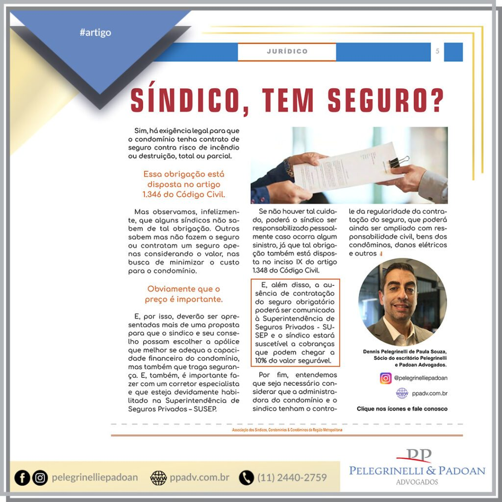
Síndico, tem seguro? Sim, há exigência legal para que o condomínio tenha contrato de seguro contra risco de…
Ler matéria →Liberação de veículo apreendido por transporte irregular intermunicipal não depende do pagamento de multas A Segunda Turma do…
Ler matéria →TRF1: Trabalhador demitido que tem CNPJ ativo pode receber seguro-desemprego. Um trabalhador que foi demitido por justa causa…
Ler matéria →O automóvel zero-quilômetro teria apresentado avarias dois anos depois da aquisição. A juíza da 2ª Vara Cível de…
Ler matéria →
Sem registro, contrato de união estável com separação total de bens não produz efeitos perante terceiros Para a…
Ler matéria →
JUSTIÇA DO TRABALHO DE SÃO PAULO RECONHECE VÍNCULO EMPREGATÍCIO ENTRE MOTORISTA E APLICATIVO DE TRANSPORTE A 14ª Turma do…
Ler matéria →
É incabível o reconhecimento de união estável paralela, ainda que iniciada antes do casamento Por unanimidade, a Terceira…
Ler matéria →
Justiça rescinde contrato de sindicalista que ameaçou chefe de morte Na avaliação da juíza, a dispensa é a punição…
Ler matéria →Nova lei flexibiliza regras trabalhistas Em 15 de agosto de 2022 foi publicada no Diário Oficial da União a…
Ler matéria →TJSP não reconhece fundo de comércio na apuração de haveres de sócio retirante. Decisão segue entendimento recente do…
Ler matéria →LEI Nº 14.437, DE 15 DE AGOSTO DE 2022 ? Foi convertida em Lei a Medida Provisória nº 1.109…
Ler matéria →Subsecretaria de Políticas para as Mulheres ? No dia 03 de agosto aconteceu a reunião ordinária do Conselho Municipal…
Ler matéria →Despesas com brindes podem ser deduzidas do Lucro Real, decide Carf. Relator considerou que gastos com brindes, desde…
Ler matéria →NÃO COMPARECIMENTO A AUDIÊNCIA POR FALTA DE VACINAÇÃO OU DE EXAME NEGATIVO PARA COVID GERA CONFISSÃO A 11ª Turma…
Ler matéria →
PROVAS TESTEMUNHAIS SÃO ANULADAS PELA JUSTIÇA DO TRABALHO APÓS VÍDEO NO TIK TOK Um vídeo postado na rede social…
Ler matéria →ITBI não incide em partilha consensual com divisão desigual de bens Nos processos de divórcio consensual em que…
Ler matéria →Condômino que exerce posse sem oposição do coproprietário pode pedir usucapião em nome próprio Para a Terceira Turma…
Ler matéria →Separação conjugal e pensão para o pet O relacionamento dos animais domésticos com seus donos é de afetividade. Pois…
Ler matéria →Negada apelação de cliente que pedia indenização por serviços prestados por advogado 34ª Câmara manteve decisão de 1º…
Ler matéria →O valor do ITBI não é o maior. O Superior Tribunal de Justiça decidiu, esse ano, julgar o Recurso…
Ler matéria →STF reconhece validade de acordos coletivos que limitem direitos trabalhistas Contratos deverão respeitar o que estiver garantido constitucionalmente…
Ler matéria →STJ aprova cram down contra voto abusivo de credor de 56% da dívida O julgador pode impor a aprovação do…
Ler matéria →Ao rejeitar o *recurso especial de um homem que matou os pais quando tinha 17 anos de idade, a Terceira…
Ler matéria →STJ julgará pagamento de pensão para cachorros após separação de casal Após separação, homem decidiu deixar os quatro…
Ler matéria →Livro discute reflexos das novas tecnologias no Direito As transformações proporcionadas pelos avanços tecnológicos no Poder Judiciário são temas…
Ler matéria →Não há dúvida que todas as empresas armazenam, necessariamente, uma quantidade relevante de informações de pessoas que podem ou…
Ler matéria →Afastamento da empregada gestante Publicado dia 09, a Lei nº 14.321, alterando a Lei nº 14.151 que garantia às…
Ler matéria →*Mudança da base de calculo do Imposto de TBI * Em recente sessão do Superior Tribunal de Justiça, foi…
Ler matéria →? Dra. Claudia Padoan, sócia do escritório Pelegrinelli & Padoan Advogados e presidente da Comissão da Mulher Advogada da…
Ler matéria →*Programa Debate Guarulhos* No dia 07 de março a Advogada Claudia Padoan – Sócia do escritório Pelegrinelli &…
Ler matéria →
*PORTARIA INTERMINISTERIAL MTP/MS Nº 14, DE 20 DE JANEIRO DE 2022 – PORTARIA INTERMINISTERIAL MTP/MS Nº 14, DE 20…
Ler matéria →Artigo publicado pelo Dr. Dennis Pelegrinelli na PROLEGIS INTRODUÇÃO Há sempre um fim. E para as sociedades também…
Ler matéria →A Terceira Turma do Superior Tribunal de Justiça (STJ) entendeu que a divulgação pública de conversas pelo aplicativo WhatsApp…
Ler matéria →
A lei celetista determina, em destaque após a reforma trabalhista que, para os estabelecimentos com mais de 20 empregados…
Ler matéria →
? Na tarde do dia 03/12/21, a sócia do escritório Pelegrinelli & Padoan Advogados Dra. Claudia Padoan, ex-presidente…
Ler matéria →
Conforme o Decreto nº 55.638, da cidade de São Paulo, foi regulamentada a aplicação de instrumentos indutores da função…
Ler matéria →OAB garante prerrogativas da Advocacia de Ibiúna para emissão de alvarás sem exigência de nova procuração A Segunda…
Ler matéria →LEGISLAÇÃO TRABALHISTA Governo simplifica, desburocratiza e consolida a legislação trabalhista infralegal 1000 normas revisadas foram transformadas em 15…
Ler matéria →Caso chegou à Turma após Receita exigir pagamento de R$ 27,4 milhões em IRPF, multa e juros de mora…
Ler matéria →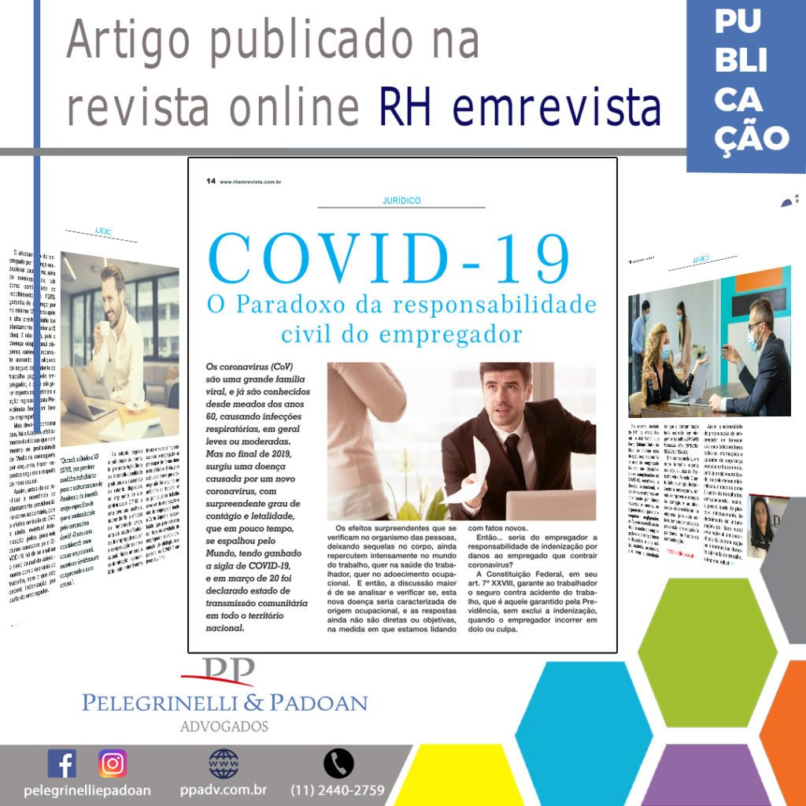
COVID-19 – O Paradoxo da Reponsabilidade Civil do Empregador Os coronavirus (CoV) são uma grande família viral, e…
Ler matéria →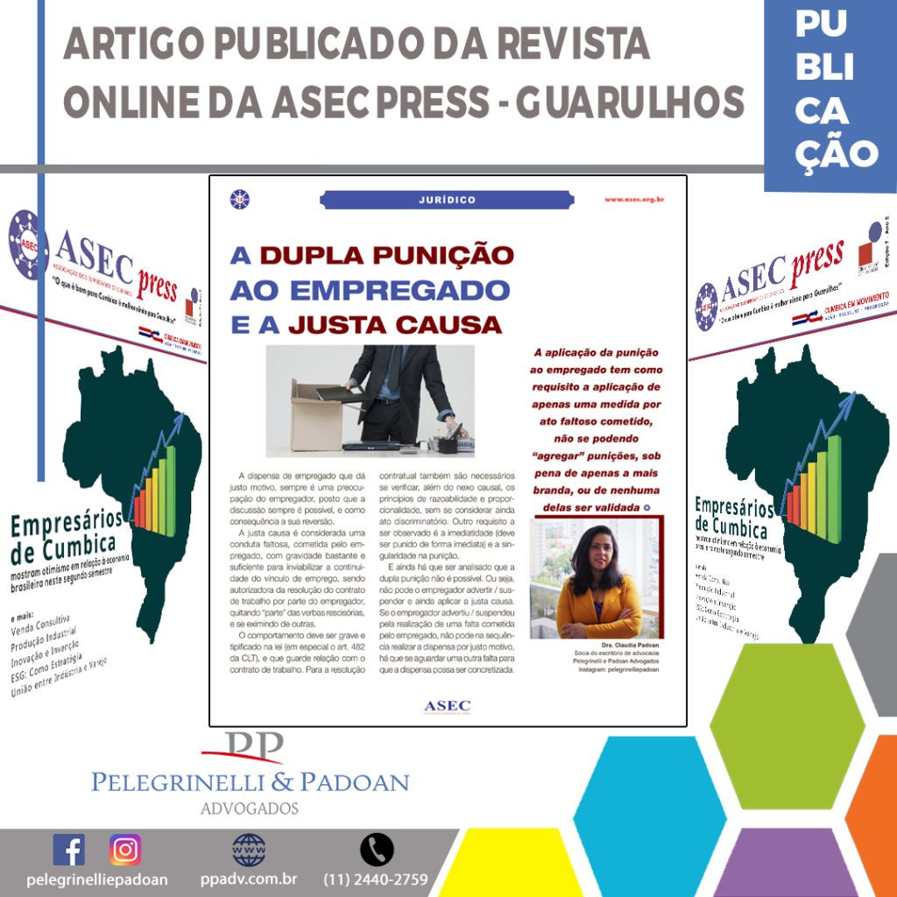
A DUPLA PUNIÇÃO AO EMPREGADO E A JUSTA CAUSA A dispensa de empregado que dá justo motivo, sempre…
Ler matéria →A Terceira Turma do Superior Tribunal de Justiça (STJ) negou recurso especial interposto por devedor que teve valor oriundo…
Ler matéria →LEI Nº 14.181, DE 1º DE JULHO DE 2021 Altera a Lei nº 8.078…
Ler matéria →Uma família uruguaia que herdou uma propriedade de mais de dois mil hectares em Santana do Livramento (RS) e…
Ler matéria →➡ Recentemente a 2ª Seção do Superior Tribunal de Justiça, julgou o…
Ler matéria →O portal de segurança cibernética Cybernews informou que 8,4 bilhões de senhas foram expostas em um vazamento de dados…
Ler matéria →A ANPD (Autoridade Nacional e Proteção de Dados, lançou no dia 28/05 “Guia Orientativo para Definições dos Agentes de…
Ler matéria →Nesta quarta-feira (12/5), o presidente Jair Bolsonaro sancionou lei que garante o afastamento presencial de empregadas grávidas durante…
Ler matéria →A Secretaria Especial de Previdência e Trabalho do Ministério da Economia (SEPRT/ME) modernizou a forma de comunicar os acidentes…
Ler matéria →
DIÁRIO OFICIAL DA UNIÃO Publicado em: 28/04/2021 | Edição: 78 | Seção: 1 | Página: 2 Órgão: Atos do Poder Executivo MEDIDA PROVISÓRIA Nº 1.045, DE 27 DE…
Ler matéria →Pode o condomínio proibir aluguel por temporada por meio de plataformas digitais. Esse foi o entendimento majoritário da 4ª…
Ler matéria →➡ Direito de habitação x extinção de condomínio. Conforme Recurso Especial nº 1.846.167 da 3ª Turma do Superior Tribunal…
Ler matéria →Dra. Ivany Tavares – Presidente (em exercício) da 57.ª Subseção da OAB Guarulhos e Advogada da Pelegrinelli e Padoan…
Ler matéria →Foi reaberto o Programa de Retomada Fiscal que permite a renegociação de todos os débitos que vierem a ser…
Ler matéria →O Plenário decidiu que o ISS é tributável no licenciamento de software e excluiu a incidência de ICMS nessas…
Ler matéria →O STF manteve decisão que considerou ilegal a cobrança do imposto, pela Prefeitura de São Paulo, antes do registro…
Ler matéria →Sócias que venderam empresa omitindo falta de certificação devem arcar com custos para sua obtenção A 1ª Câmara Reservada…
Ler matéria →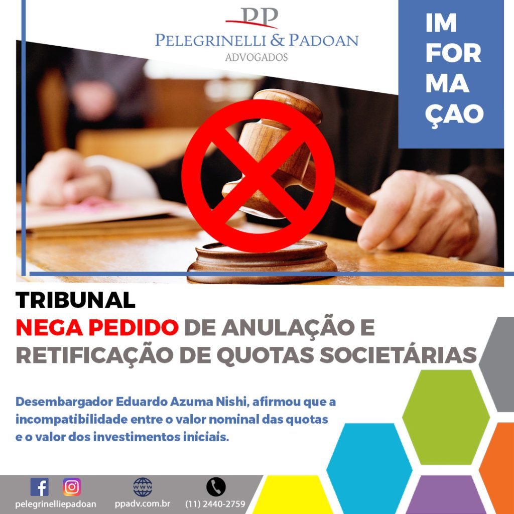
Decisão manteve dissolução parcial de sociedade. A 1ª Câmara Reservada de Direito Empresarial do Tribunal de Justiça de São…
Ler matéria →O ministro Gilmar Mendes, do Supremo Tribunal Federal (STF), negou seguimento ao Mandado de Segurança (MS) 37165 e manteve…
Ler matéria →Com o fim do voto de desempate, foi revertida a jurisprudência do Conselho Administrativo de Recursos Fiscais (Carf) sobre…
Ler matéria →Alternativa para a solução de conflitos. A pandemia de Covid-19 refletiu diretamente na economia e atividade empresarial de São…
Ler matéria →O trabalhador que contrair Covid tem direito a estabilidade? Muito tem se especulado sobre a possibilidade do COVID-19…
Ler matéria →Com a entrada em vigor da Lei Nº 12.846, também conhecida como “Lei anticorrupção”, o Brasil se adequa às…
Ler matéria →Hoje dia 8 de dezembro, a OAB Guarulhos realizou a Inauguração do Polo Bonsucesso/Pimentas (localizado dentro do Shopping Bonsucesso…
Ler matéria →Dia 03 de dezembro O dia internacional das pessoas com deficiência física é uma data celebrada internacionalmente…
Ler matéria →Por exagerar no celular, TRT-3 mantém justa causa de trabalhador A 10ª Turma do Tribunal Regional do Trabalho da…
Ler matéria →Calamidade pública: como ficam as férias e o 13º salário dos empregados que tiveram suspensão de contrato? Nota…
Ler matéria →Projeto-piloto será no Foro Regional do Butantã. O Tribunal de Justiça de São Paulo editou o Provimento Conjunto nº…
Ler matéria →TJ-SP anula assembleia que elegeu síndico durante epidemia da Covid-19 Por vislumbrar irregularidades no procedimento, a 31ª Câmara de…
Ler matéria →Acusados vendiam bilhetes com créditos falsos. A 10ª Vara Criminal da Capital condenou, dez pessoas que falsificavam e…
Ler matéria →Receita Federal envia cartas a contribuintes com Declaração do IRPF 2020 retida na malha fina Ação do Fisco visa…
Ler matéria →Receita Federal esclarece sobre prorrogação de prazos de obrigações em decorrência da pandemia do coronavirus. Diante da Solução de…
Ler matéria →Decreto foi publicado no Diário Oficial da União. Publicado em 14/10/2020 – 10:58 Por Andreia Verdélio – Repórter…
Ler matéria →Dia 27/10 – 18h30 Dr. Dennis Pelegrinelli advogado do escritório Pelegrinelli & Padoan Advogados, irá ministrar uma palestra…
Ler matéria →Os ministros da Primeira Turma do Superior Tribunal de Justiça (STJ) julgaram o tema nesta terça-feira (8/9) no…
Ler matéria →Devido à pandemia, juiz estabelece prazo para quitação. A 5ª Vara Cível da Comarca de Santos indeferiu pedido de…
Ler matéria →Prorroga os prazos para celebrar acordos de redução proporcional de jornada de trabalho e de salário e de suspensão…
Ler matéria →Isenção do IOF no período de 03/04/2020 a 03/07/2020. Conforme Decreto .º 10.305, de 1º de abril de 2020, o…
Ler matéria →
Presidência da República – Secretaria-Geral – Subchefia para Assuntos Jurídicos MEDIDA PROVISÓRIA Nº 936, DE 1º DE ABRIL DE 2020…
Ler matéria →Presidência da República – Secretaria-Geral – Subchefia para Assuntos Jurídicos DECRETO Nº 10.298, DE 30 DE MARÇO DE 2020 Institui…
Ler matéria →Mudaram as regras referente aos prazos das assembleias e das votações nas sociedades anônimas, limitadas e cooperativas. Presidência da RepúblicaSecretaria-GeralSubchefia…
Ler matéria →A Lei nº 11.101 de 9 de Fevereiro de 2005 possibilita pedido de falência pelo próprio devedor. Isso mesmo, o…
Ler matéria →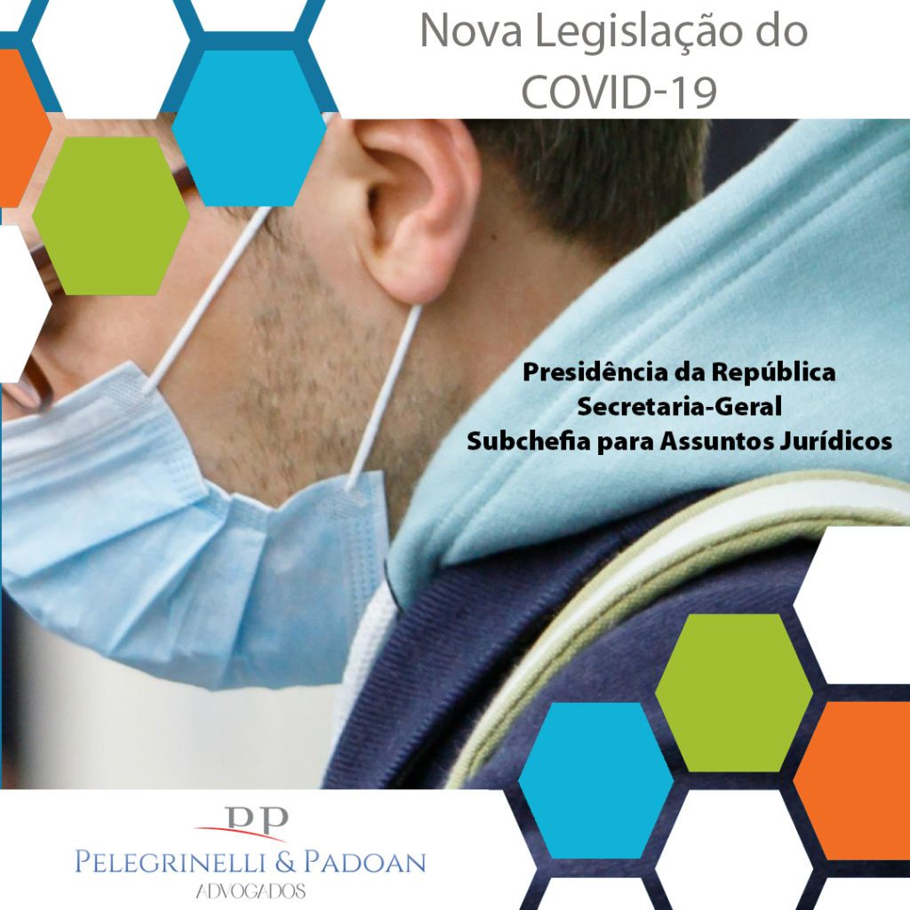
Presidência da RepúblicaSecretaria-GeralSubchefia para Assuntos Jurídicos DECRETO Nº 10.292, DE 25 DE MARÇO DE 2020 Altera o Decreto nº…
Ler matéria →Entre elas, está o auxílio emergencial para trabalhadores informais e de baixa renda e a tornar flexíveis as negociações individuais…
Ler matéria →Diante das medidas restritivas, decorrentes do COVID-19, evidencia-se riscos econômicos diante da paralisação, atraso de recebíveis, aumento de custos, falta…
Ler matéria →Presidência da RepúblicaSecretaria-GeralSubchefia para Assuntos Jurídicos MEDIDA PROVISÓRIA Nº 927, DE 22 DE MARÇO DE 2020 Dispõe sobre as…
Ler matéria →Ministério da Economia SECRETARIA ESPECIAL DE FAZENDA, COMITÊ GESTOR DO SIMPLES NACIONAL, RESOLUÇÃO Nº 152, DE 18 DE MARÇO DE…
Ler matéria →Já está ocorrendo a interrupção e a suspensão das cadeias produtivas das empresas diante da falta de insumos, ou por…
Ler matéria →III Conferência Nacional da Advogada – igualdade – liberdade – sororidade Fortaleza – Ceará. A Dra. Ivany Tavares, advogada do…
Ler matéria →Foi o tema publicado pela Dra. Eloisa Saldiva, advogada da equipe jurídica do escritorio Pelegrinelli & Padoan Advogados, no jornal…
Ler matéria →Entrevista com Dr. Dennis Pelegrinelli e a Drª. Claudia Padoan, sócios da PPADV
Ler matéria →Para saber mais: Telefone: (11) 2440-2759
Ler matéria →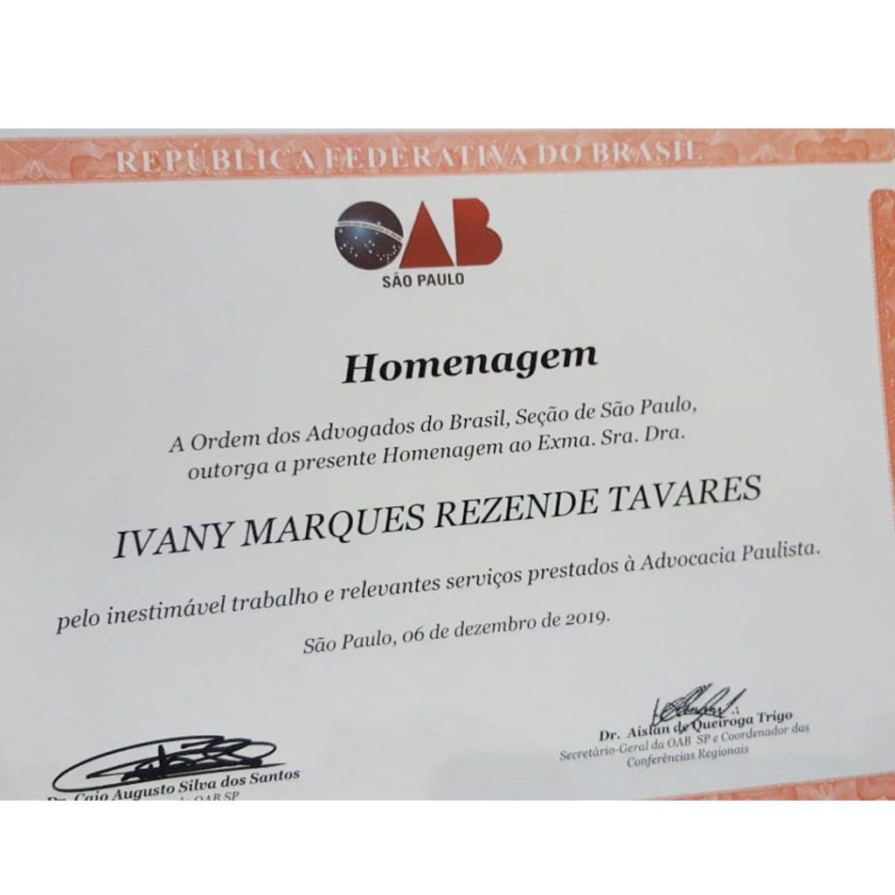
Drª. Ivany Tavares, participou da 7ª Conferência da Advocacia do Alto Tietê, que aconteceu no dia 06 de dezembro em…
Ler matéria →No dia 06 de Dezembro, o Dr. Dennis Pelegrinelli esteve na premiação dos Jurista Cristão IJCB 2019 e da Cerimônia…
Ler matéria →O encontro mensal do Conselho de Desenvolvimento Municipal da Cidade de Guarulhos, em que reuniu representantes de entidades de classe…
Ler matéria →Na edição 7 do Jornal da ASSINCON, a Drª Bianca Alba Costacurta – Advogada da Pelegrinelli e Padoan Sociedade de…
Ler matéria →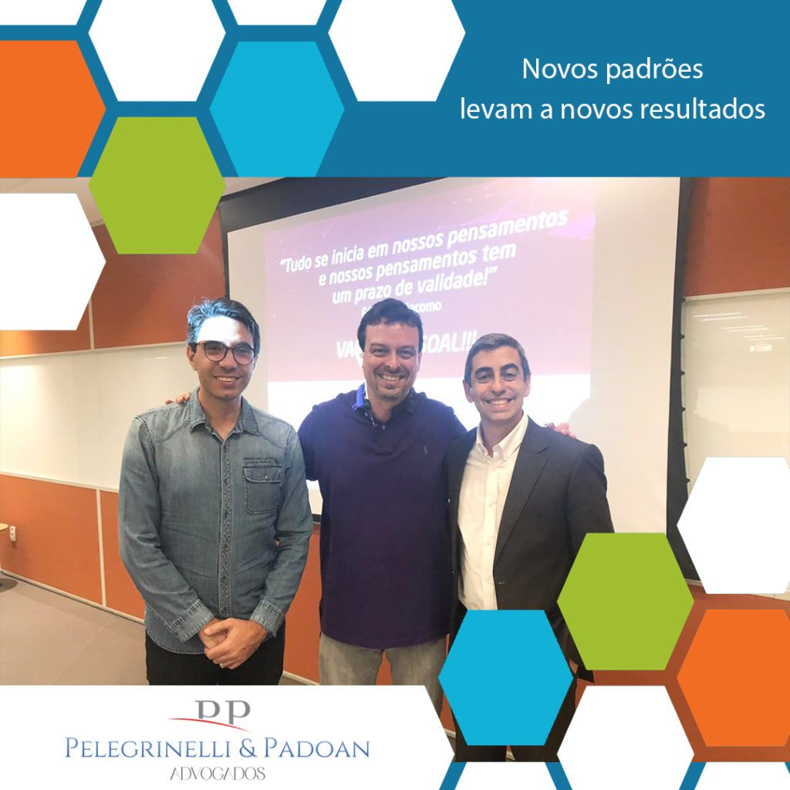
O Dr. Dennis Pelegrinelli participou em companhia do Dr. Adriano Gilioli da palestra MINDSET: Novos Padrões levam a Novos Resultados !! realizado por Fabio Di…
Ler matéria →No dia 25 de novembro, a Dra. Claudia Padoan e o Dr. Jacksom Gomes, foram os entrevistados do Programa “TV…
Ler matéria →Tribunal de Justiça de São Paulo reforma decisão que havia condenado empresa de ônibus por queda de passageira. Em primeira…
Ler matéria →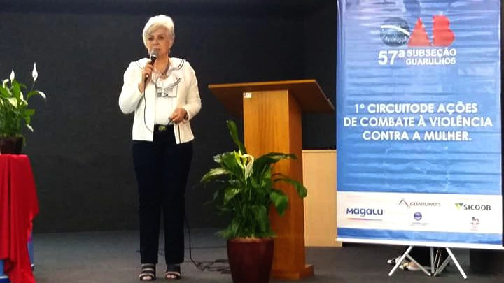
No dia 03 de outubro na Faculdade Anhanguera Guarulhos a Dra. Ivany Tavares, vice-presidente da OAB 57ª Subseção Guarulhos e…
Ler matéria →Os sócios do escritório Pelegrinelli e Padoan, participaram da Arena ANTP 2019 – Congresso Brasileiro de Mobilidade Urbana é a…
Ler matéria →Governo edita norma com novas regras para acordos trabalhistas Com a entrada em vigor da Lei nº 13.876, os acordos…
Ler matéria →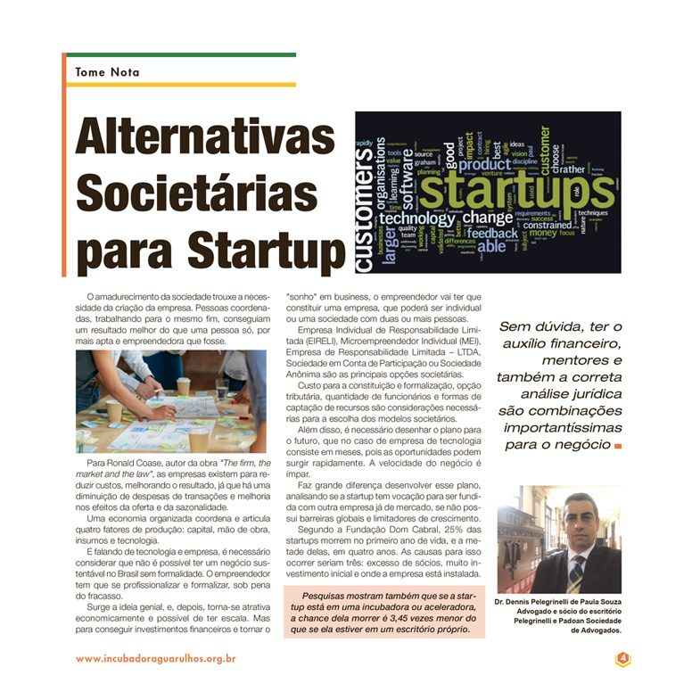
O Dr. Dennis Pelegrinelli escreveu sobre esse tema na 3ª edição Jornal Cidade Progresso, confira:
Ler matéria →O evento teve como principal objetivo apresentar as novas tecnologias do Mercado Livre e Mercado Pago, bem como, fomentar a…
Ler matéria →Foram discutidos o futuro da Advocacia, da análise objetiva e crítica das ameaças que se tornam cada vez mais nítidas…
Ler matéria →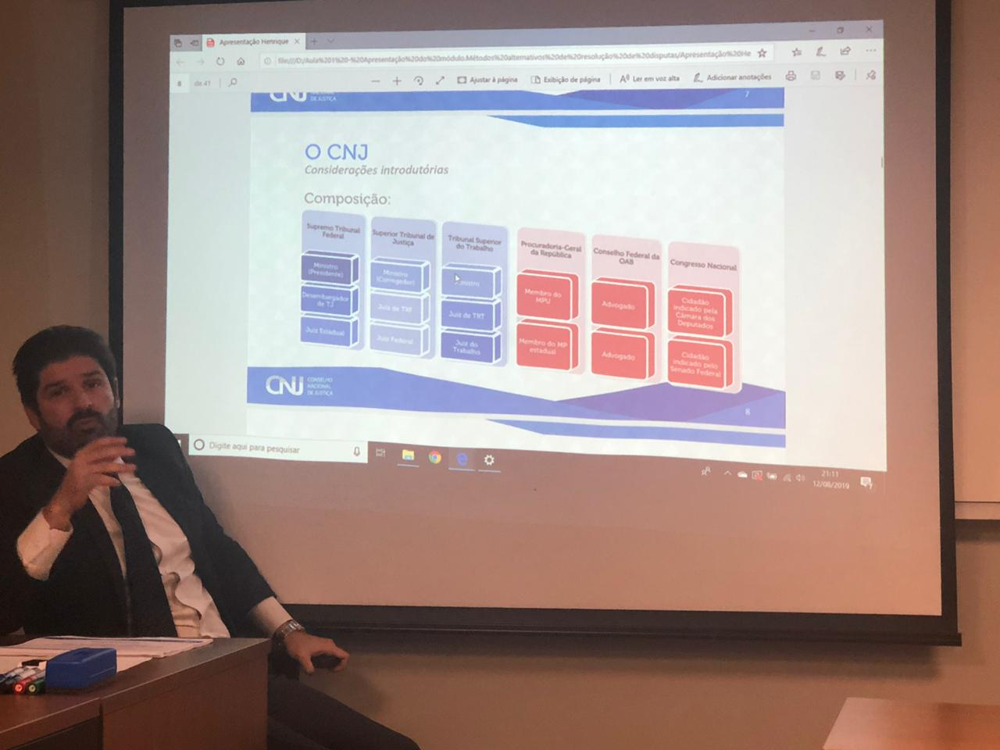
Dr. Dennis Pelegrinelli esteve no dia 12/08 na sede do IBMEC/SP o com o Dr. Henrique Ávila, Presidente da Comissão…
Ler matéria →Em comemoração ao Dia do Advogado, a Dra Ivany Tavares, palestrou no dia 08 de agosto na reunião do Rotary…
Ler matéria →Dra Ivany Tavares, Vice-Presidente OAB Guarulhos e Advogada do escritório Pelegrinelli & Padoan Advogados, Dr. Eduardo Ferrari (presidente da OAB…
Ler matéria →Dra. Ivany Tavares, Vice-Presidente OAB 57 Guarulhos e Advogada do escritório Pelegrinelli & Padoan Advogados, reuniu-se com…
Ler matéria →A robotização reduz falhas humanas inerentes às atividades manuais e repetitivas e permite um melhor aproveitamento da capacidade…
Ler matéria →Assédio sexual dentro de ônibus realizado por outro passageiro, a empresa de transporte público não é juridicamente responsabilizada…
Ler matéria →Dra. Ivany Tavares, advogada do escritório Pelegrinelli & Padoan Advogados, participou da reunião geral de Comissões da OAB 57…
Ler matéria →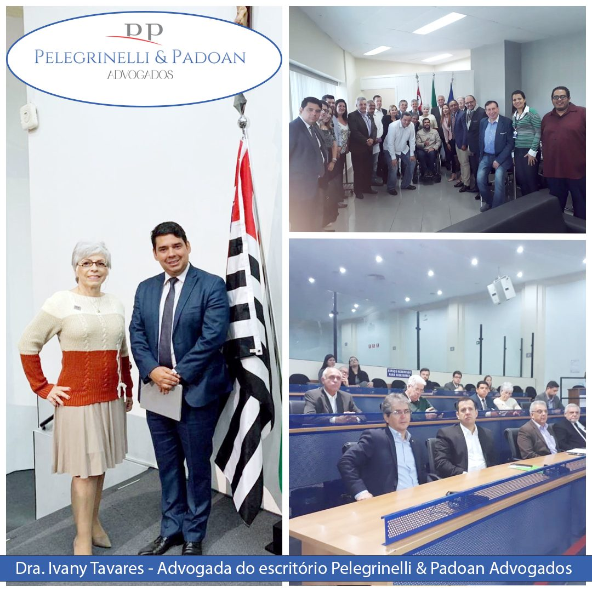
A Dra. Ivany Tavares, do escritório Pelegrinelli & Padoan Advogados esteve na Câmara Municipal de Guarulhos reunida com a Diretoria…
Ler matéria →Dra. Ivany Tavares, Dr. Jacksom Gomes, Dra. Bia Costacurta e Dr. Dennis Pelegrinelli são advogados do escritório Pelegrinelli…
Ler matéria →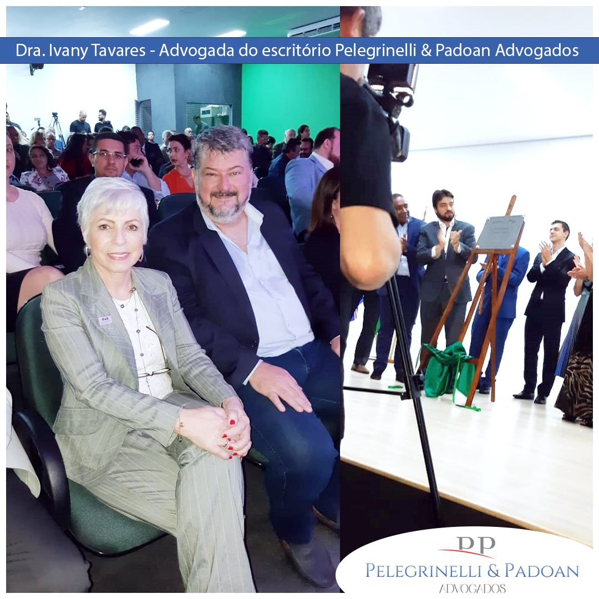
A Faculdade Torricelli inaugurou, na noite do dia 30/05, o “Novo centro de eventos – Faculdade Torricelli” na…
Ler matéria →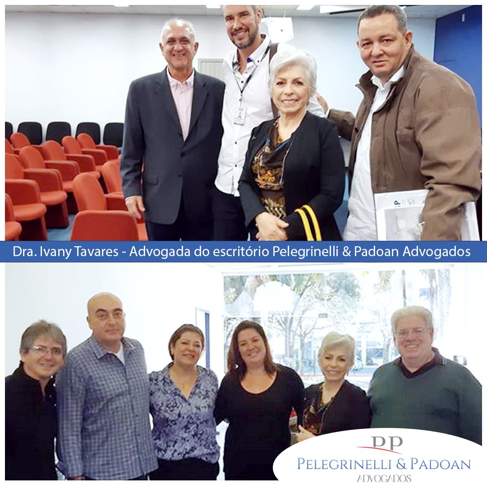
A Dra. Ivany Tavares esteve no mês de maio, com o presidente e demais membros equipe do CODEMGRU para…
Ler matéria →O Adv. Dennis Pelegrinell do escritório Pelegrinelli e Padoan, participou do 23º Congresso de Responsabilidade Civil e Direito…
Ler matéria →Foi com esse entendimento que a 10º Câmara de Direito Privado do Tribunal de Justiça de São Paulo…
Ler matéria →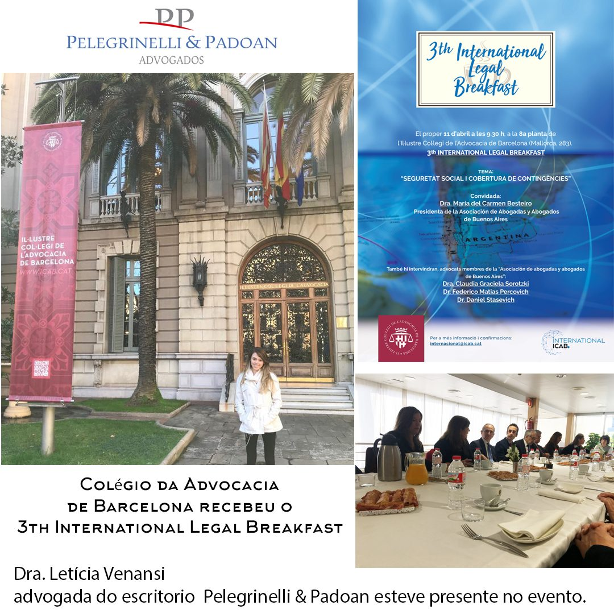
Representantes de Buenos Aires fizeram uma exposição sobre o sistema do país Argentino, além de uma comparação com…
Ler matéria →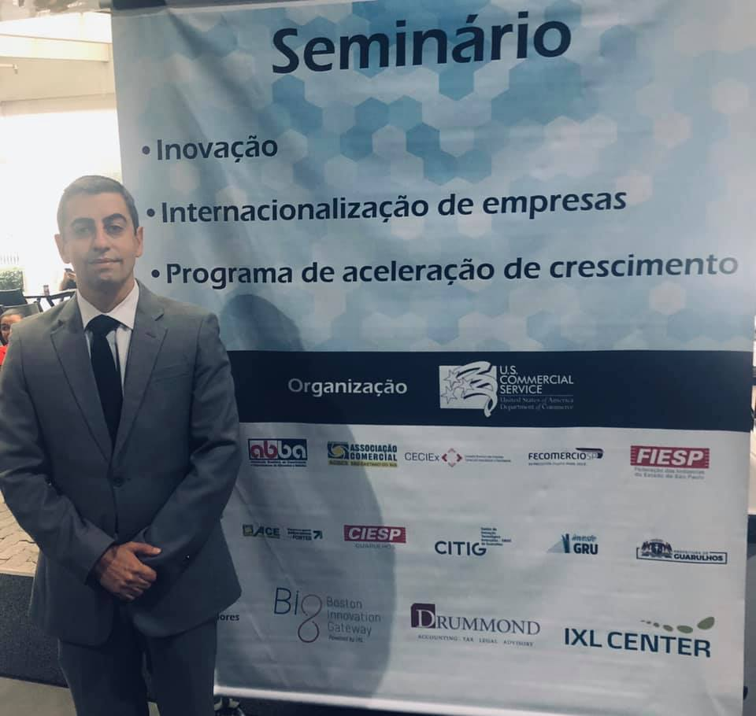
Dando prosseguimento ao processo de internacionalização da Pelegrinelli e Padoan Sociedade de Advogados o advogado Dr. Dennis Pelegrinelli…
Ler matéria →O evento aconteceu na manhã do dia 20 de fevereiro e marcou o lançamento da INOVA RH, que acontecerá…
Ler matéria →Ontem, a Dra. Ivany Tavares esteve em Brasília na solenidade de posse da nova Diretoria do Conselho Federal da Ordem…
Ler matéria →”O Conselho Nacional de Justiça (CNJ) esclareceu como será colocado em prática o parágrafo 4º do artigo 13 do…
Ler matéria →A empresa de transporte público deve ser responsabilizada quando ocorrer o assédio sexual? Está pendente de julgamento no Superior Tribunal…
Ler matéria →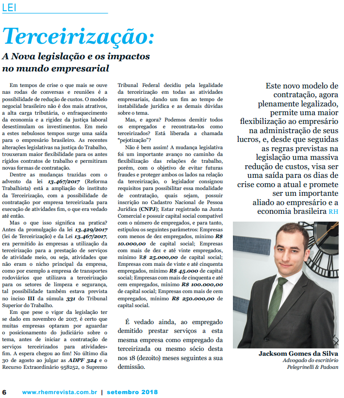
O Dr. Jacksom comentou as novas regras de terceirização de mão de obra no periódico RH EM REVISTA, publicado na…
Ler matéria →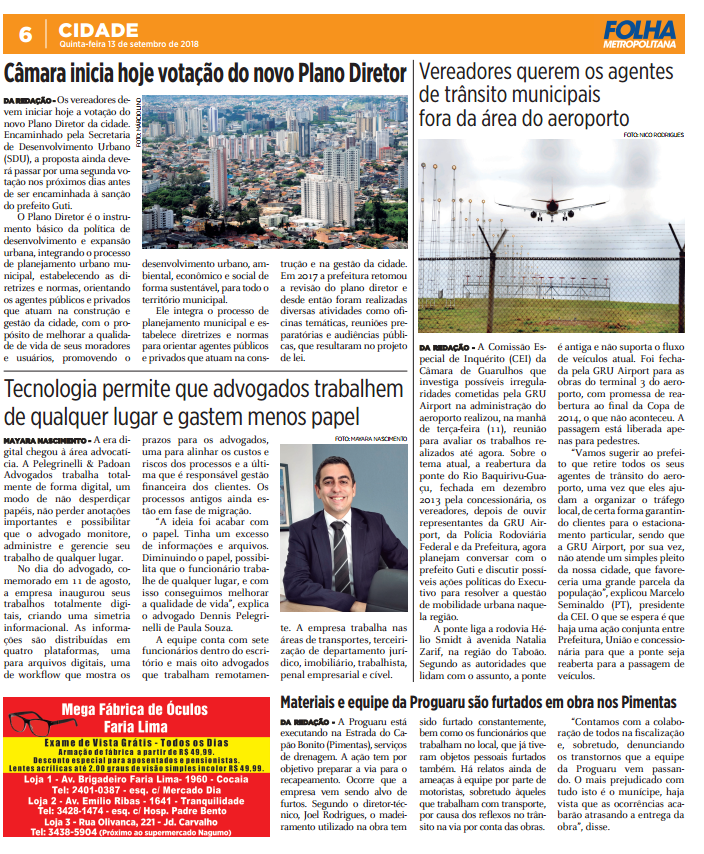
Publicada hoje na Folha Metropolitana matéria a respeito das novas plataformas tecnológicas da Pelegrinelli e Padoan Advogados
Ler matéria →COMPLIANCE COMO ELEMENTO ANTICORRUPÇÃO DA EMPRESA DE VANGUARDA
Ler matéria →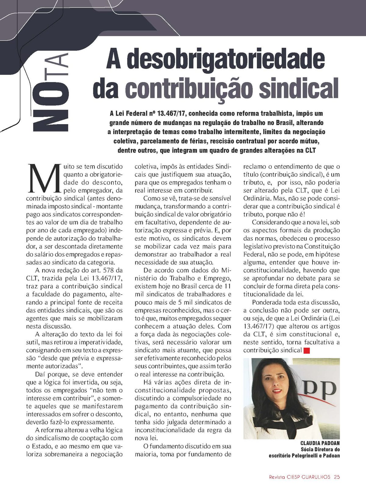
A Dra. Claudia Padoan publicará nesse mês, na revista do CIESP, o artigo a respeito da cobrança da contribuição sindical…
Ler matéria →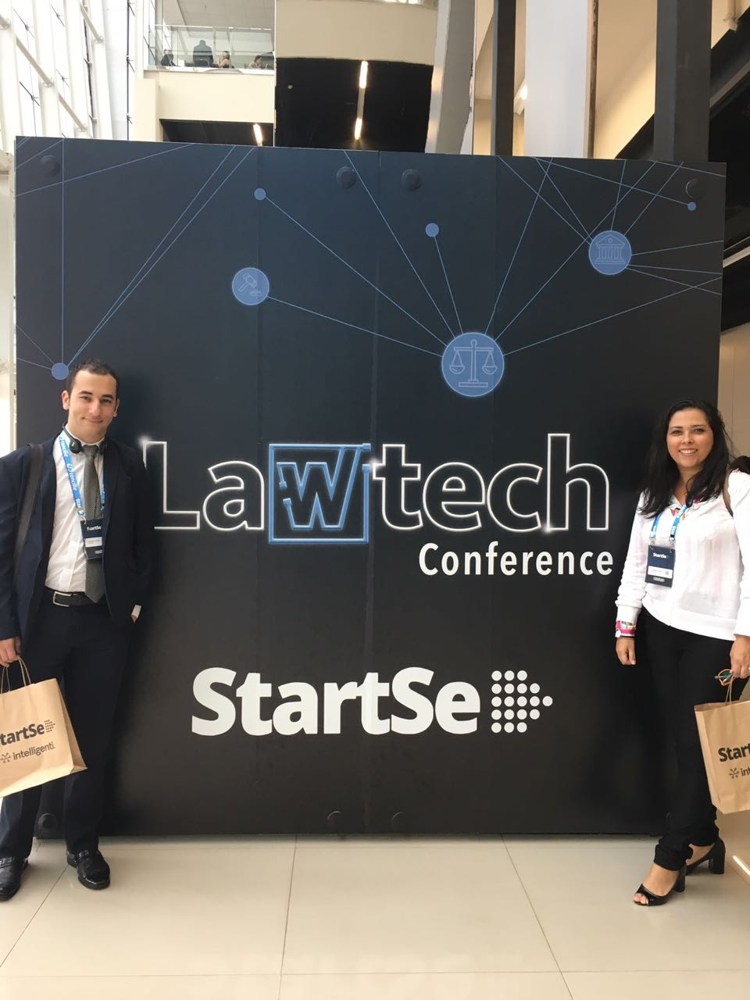
A Dra. Claudia Padoan e Dr. Jacksom Gomes representaram a banca PELEGRINELLI E PADOAN na última edição da LawTech Conference…
Ler matéria →Ontem, na sede do Instituto dos Advogados de São Paulo – IASP, o Dr. Dennis Pelegrinelli participou do evento da…
Ler matéria →A Dra. Ivany Tavares participou do programa TV OAB Guarulhos exibido na última sexta-feira no canal 3 da Net. A…
Ler matéria →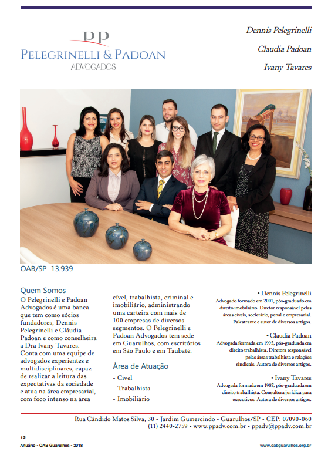
Normal 0 21 false false false PT-BR X-NONE X-NONE /* Style Definitions */ table.MsoNormalTable {mso-style-name:"Tabela normal"; mso-tstyle-rowband-size:0; mso-tstyle-colband-size:0…
Ler matéria →No dia 02 de fevereiro, o advogado Dennis Pelegrinelli foi entrevistado no programa SUA SEGURANÇA GLOBALL da TV DESTAQUE. Foram…
Ler matéria →Imóvel não responde por dívida trabalhista, se comprovada a sua venda antes do contrato de trabalho, mesmo que não haja…
Ler matéria →
O Dr. Dennis Pelegrinelli participou em 06/12 do Laboratório SETCESP de Inovação e Tecnologia para as Empresas de Transportes, no…
Ler matéria →
A Associação Comercial de Guarulhos promoveu, em 28/11, em sua sede, um evento para os associados, para apresentar o balanço…
Ler matéria →
Dr. Dennis Pelegrinelli participou hoje, 23/11, da Aurum Summit 2017, evento de imersão no futuro da advocacia moderna, com profissionais…
Ler matéria →Uma blitz realizada nas dependências dos Fóruns, onde estão as Varas da Família e Cível, visou ouvir a opinião dos…
Ler matéria →O escritório Pelegrinelli e Padoan Advogados esteve representado pela futura Dra. Marli Carvalho, no II Congresso Brasileiro de Processo e…
Ler matéria →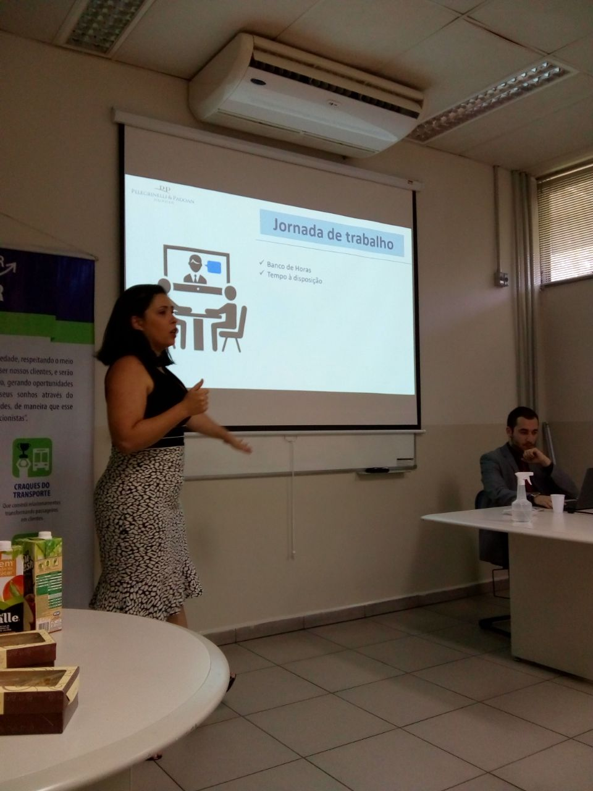
A Dra. Claudia Padoan reuniu hoje, 16/11, funcionários do RH e Departamento Pessoal das principais empresas de ônibus de Guarulhos…
Ler matéria →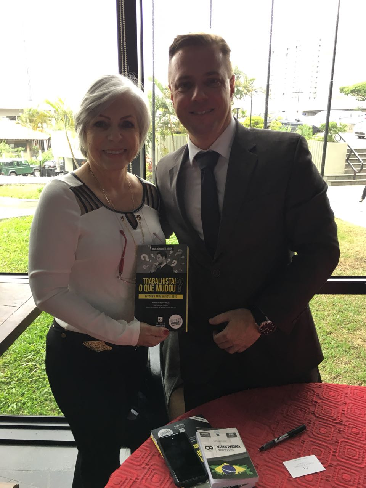
As Dras. Ivany Tavares, Claudia Padoan e Eloisa Saldiva estiveram, em 03/11, na conferência realizada no SETCESP, onde o Juiz…
Ler matéria →Dra. Ivany Tavares participou, em 30/10, no auditório do Laboratório Aché, do lançamento do 3º Caderno Econômico de Guarulhos, que…
Ler matéria →Dennis Pelegrinelli esteve, em 26/10, na Fecomércio onde participou do Forum Investir em Portugal – Atrativos e Oportunidade de Negócios…
Ler matéria →Dennis Pelegrinelli concedeu entrevista à Rádio Justiça para falar sobre a polêmica entre taxistas e motoristas do aplicativo UBER. Confira…
Ler matéria →A Dra. Ivany Tavares concedeu entrevista para a Rádio Justiça e discorreu sobre o tema Reforma Trabalhista. Ouça a entrevista…
Ler matéria →A Dra. Ivany Tavares participou hoje, 3/10, do I Forum Regional de Compras Públicas de Guarulhos. O evento, realizado no…
Ler matéria →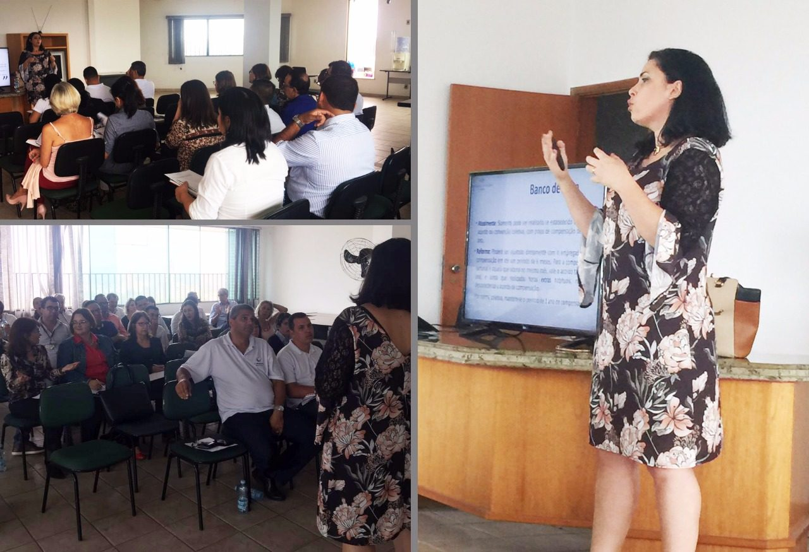
A convite da diretoria da AVETP – Associação Vale Paraibana das Empresas de Transportes de Passageiros, a Dra. Claudia Padoan…
Ler matéria →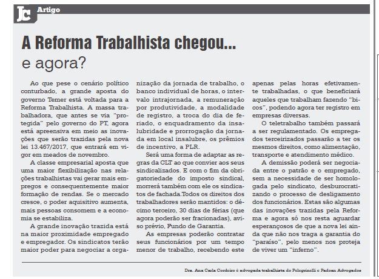
Artigo publicado no Jornal da Cidade – Arujá, em 16 de setembro de 2017 A Reforma Trabalhista chegou…e agora? Por…
Ler matéria →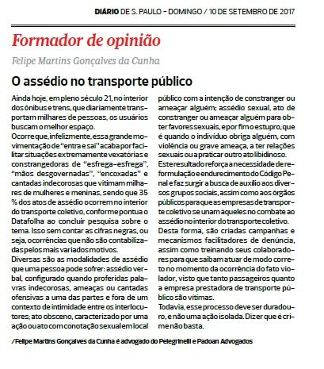
Artigo publicado no Diário de São Paulo em 10 de setembro de 2017. O assédio no transporte público Por Felipe…
Ler matéria →A Dra. Ivany Tavares participou nesta manhã, 14/9, da reunião do BNI, onde colocou em discussão a questão da Lei…
Ler matéria →Os doutores Jacksom Gomes, Cláudia Padoan, Ivany Tavares, Dennis Pelegrinelli e Letícia Venansi, do Pelegrinelli e Padoan Advogados participaram hoje…
Ler matéria →Hoje, a homenagem é para aqueles que lutam pelo exercício da justiça e cidadania! 11 de Agosto Dia do Advogado
Ler matéria →Dennis Pelegrinelli declarou seu apoio a Maurício Colin à frente do CIESP Guarulhos. As eleições na entidade acontecem no final do ano e o próximo mandato será de 2018 a 2021.
Ler matéria →A Dra. Letícia Venansi esteve, em 31/7, no CIESP Guarulhos, onde participou do evento A Transição de Gerações na Empresa Familiar.
Ler matéria →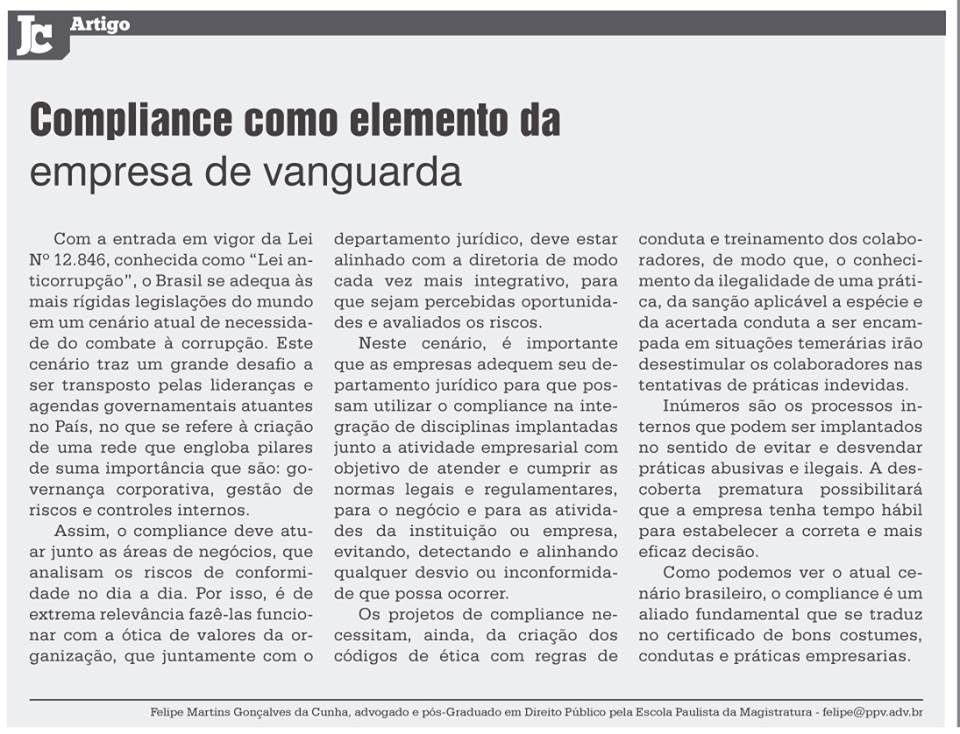
Com a entrada em vigor da Lei Nº 12.846, conhecida como “Lei anticorrupção”, o Brasil se adequa às mais rígidas legislações do mundo em um cenário atual de necessidade do combate à…
Ler matéria →Em entrevista à Rádio Justiça, Dennis Pelegrinelli comenta a lei que restringiu o acesso de caminhões em grandes cidades.
Ler matéria →Dra. Cláudia Padoan, do PP Advogados, concedeu entrevista para a Rádio Justiça onde falou sobre o corte de ponto em manifestações grevistas.
Ler matéria →Uma modalidade conhecida como Build to Suit, que surgiu na nossa legislação brasileira em 2012, através da Lei nº 12.744 e acrescentou o artigo 54 da Lei de Locação, trouxe uma nova…
Ler matéria →A Prefeitura de Guarulhos lançou, em 6/7, o Caderno Econômico de Guarulhos com as principais informações econômicas da cidade, que são atualizadas a cada trimestre.
Ler matéria →A Dra. Ivany Tavares, do PP Advogados, participou, em 29/6, da palestra sobre Modernização Trabalhista, proferida pela Dra. Alessandra Cristina do Nascimento, no CIESP Guarulhos.
Ler matéria →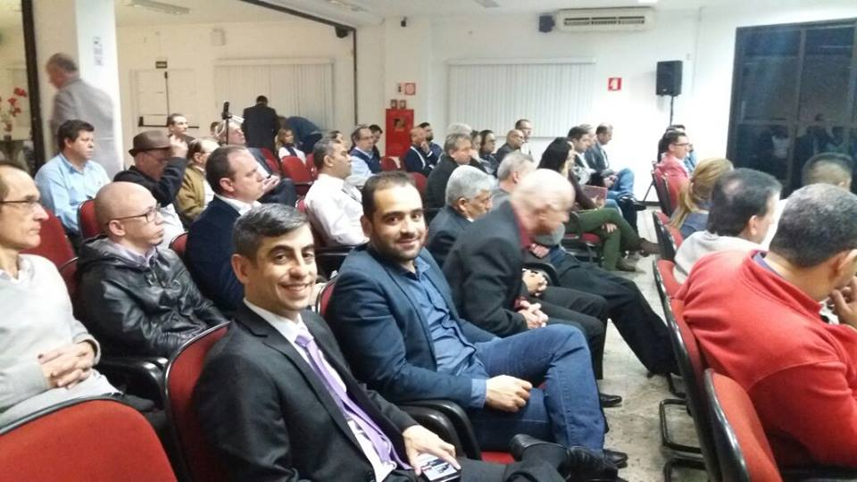
Dennis Pelegrinelli, representando o escritório PP Advogados, participou em 27/6, do I Forum com o prefeito Guti, no CIESP Guarulhos, para debater as questões de governo que impactam a…
Ler matéria →Para advogado, sentença abre brecha para a indústria do dano moral A Terceira Turma do Superior Tribunal de Justiça (STJ) decidiu manter o acórdão que condenou a Companhia Paulista de Trens…
Ler matéria →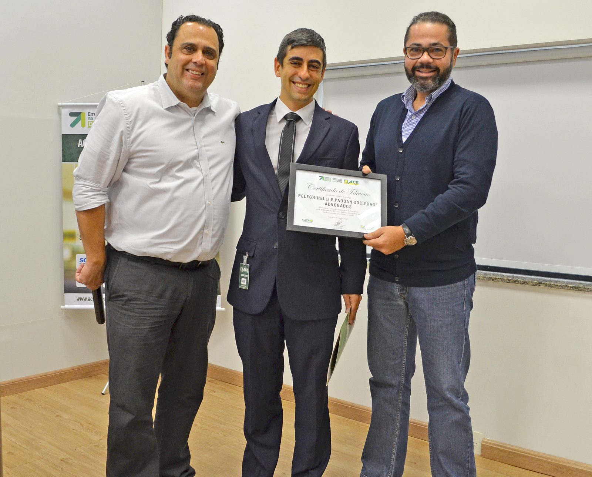
Dennis Pelegrinelli esteve em 13/6, na sede da Associação Comercial e Empresarial de Guarulhos – ACE-Guarulhos onde participou da reunião de diretoria e recebeu o certificado de filiação.
Ler matéria →As doutoras Ana Carla Cordeiro Silva e Eloísa Saldiva e o doutor Jacksom Gomes da Silva, do PP Advogados, estiveram em 2/6, na Casa da Advocacia, em Guarulhos, para participar do workshop…
Ler matéria →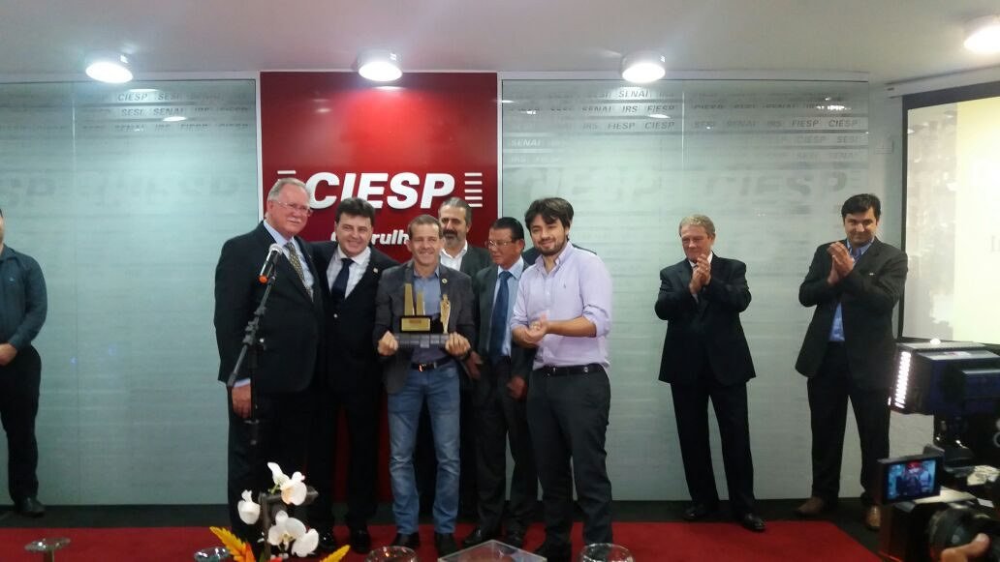
O Dia da Indústria foi comemorado, em 31/5, no CIESP Guarulhos, e contou com a participação de Dennis Pelegrinelli e Letícia Venansi, do PP Advogados.
Ler matéria →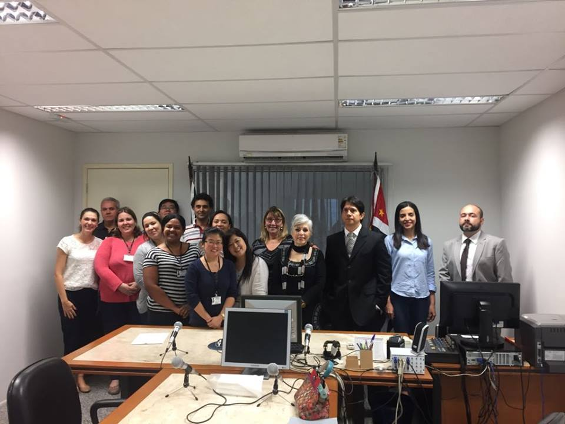
A Inspeção Judicial, realizada na 3ª Vara Federal de Guarulhos, contou, entre outros, com a participação dos representantes da Comissão das Relações com o Poder Judiciário, a qual a Dra…
Ler matéria →A Consultora Jurídica do PP Advogados, Ivany Tavares, participou da reunião na ASEC, onde os associados receberam informações sobre o trabalho desenvolvido pela entidade, situada em…
Ler matéria →O núcleo trabalhista do PP Advogados, formado pelos doutores Ana Carla Cordeiro Silva, Claudia Barbosa Padoan, Eloisa Aparecida Oliveira Saldiva, Ivany Marques Rezende Tavares e Jacksom…
Ler matéria →Dennis Pelegrinelli representou o PP Advogados, em 5, 6 e 7 de maio, no 22º Congresso de Responsabilidade Civil e Direito Aplicado ao Transporte Terrestre de Passageiros, em São Roque – SP.
Ler matéria →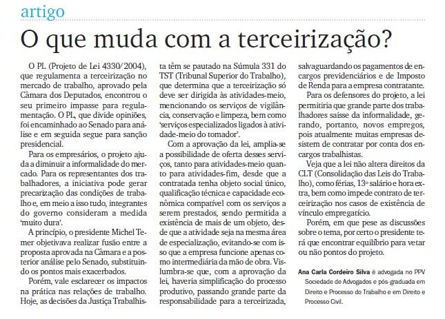
Matéria publicada no Diário do Grande ABC O PL (Projeto de Lei 4330/2004), que regulamenta a terceirização no mercado de trabalho, aprovado pela Câmara dos Deputados, encontrou o seu…
Ler matéria →Artigo publicado no site Difundir em 03/05/2017. Inicialmente esclarecemos o que é a imunidade tributária: As imunidades tributárias são as limitações que a Constituição da República impõe…
Ler matéria →Artigo publicado no site Pautas Incorporativas em 26/04/2017. Em linhas gerais o cálculo do ICMS vem sendo feito pelas concessionárias…
Ler matéria →Dennis Pelegrinelli concedeu entrevista à Radio Justiça em 11 de abril de 2017 e falou sobre o corte orçamentário do…
Ler matéria →A Secretaria de Desenvolvimento Científico, Econômico, Tecnológico e Inovação de Guarulhos – SDCETI inaugurou, em 4/4, o serviço que vai…
Ler matéria →Dra. Ivany Tavares esteve, em 30/3, no Teatro Adamastor, em Guarulhos, para participar de um evento dirigido a pequenos e…
Ler matéria →Dennis Pelegrinelli, em conjunto com os empresários Eudes Martins e Rafael Gomes, da UCon Advisors, se reuniram, em 23/3, com…
Ler matéria →Ivany Tavares, Diretora Adjunta e Presidente da Comissão de Relações com o Judiciário, e Felipe Martins, Vice-Presidente da Comissão de…
Ler matéria →A Associação dos Empresários de Cumbica – ASEC, comemorou, em março, 30 anos de atividades. Dennis Pelegrinelli e Felipe Martins…
Ler matéria →As doutoras Ivany Tavares e Cláudia Padoan estiveram, em 14/3, no SETPESP para participar da palestra do Juiz Federal Marlos…
Ler matéria →Artigo publicado na terceira edição da Revista do CIESP Guarulhos em março/2017. O aumento da criminalidade no roubo de veículos…
Ler matéria →Matéria publicada no Portal Todo Dia em 23/02/2017. Das 20 cidades da RMC (Região Metropolitana de Campinas), 15 encaminham diariamente…
Ler matéria →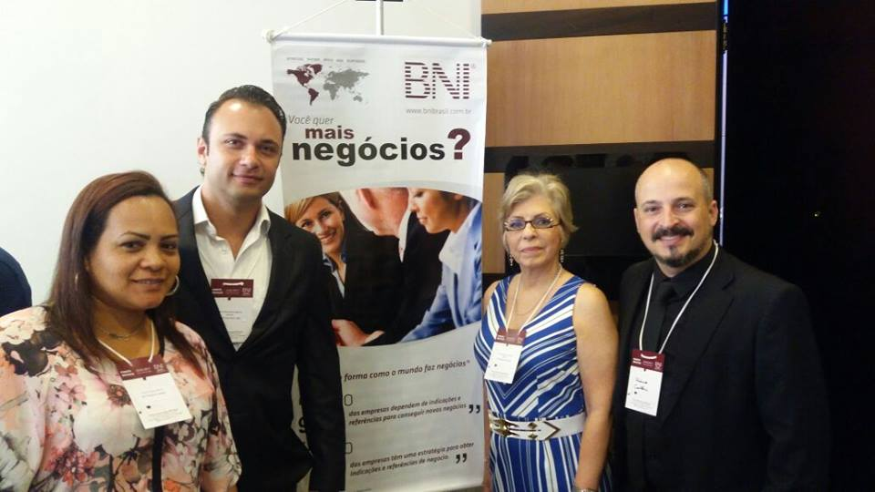
Dra. Ivany Tavares, do PPV Advogados, participou, em 22/02, no Hotel Marriot de Guarulhos, do Network do BNI. O evento…
Ler matéria →Os doutores Ivany Tavares, Cláudia Padoan e Dennis Pelegrinelli participaram, em 16/02, do lançamento do projeto Via Rápida – Empresa…
Ler matéria →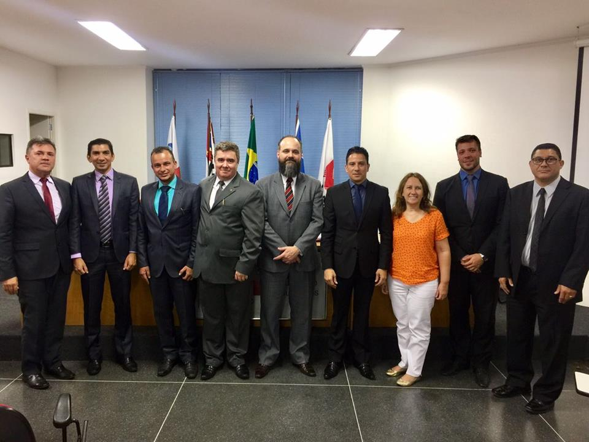
Dr. Felipe Martins, do PPV Sociedade de Advogados, participou em 9/2, da primeira reunião do ano da Comissão de Direitos…
Ler matéria →Dennis Pelegrinelli participou, em 20/12, do lançamento do projeto das futuras instalações do Parque Tecnológico de Guarulhos, no auditório do…
Ler matéria →Dra. Ivany Tavares, representando o PPV Sociedade de Advogados, esteve em 14/12, na sede da OAB para o lançamento da…
Ler matéria →Nos dias 12 e 13 de dezembro, Dennis Pelegrinelli realizou oito palestras, com turmas de até 50 participantes, sobre o…
Ler matéria →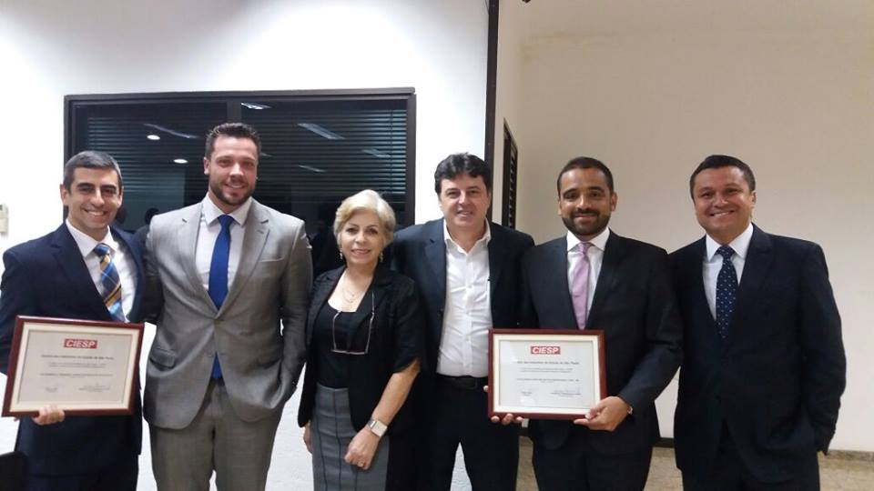
A doutora Ivany Tavares e os doutores Dennis Pelegrinelli e Felipe Martins, participaram, em 5/12, de reunião no CIESP Guarulhos…
Ler matéria →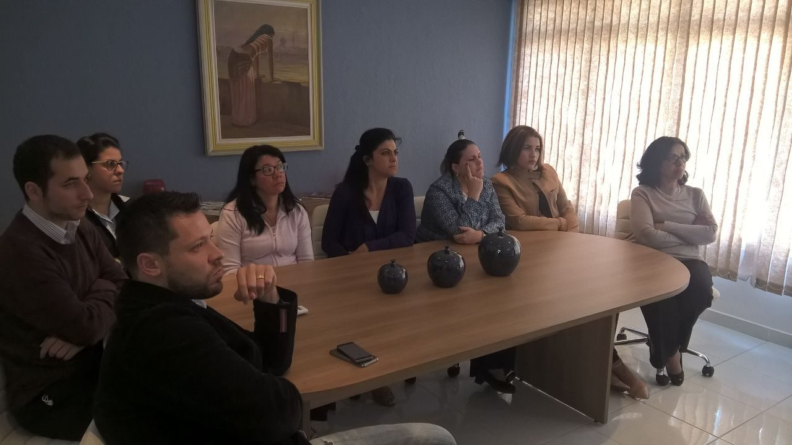
O parceiro do PPV Sociedade de Advogados, Rafael Gomes (UCon Advisors) realizou em 2/12, um treinamento de gestão com a…
Ler matéria →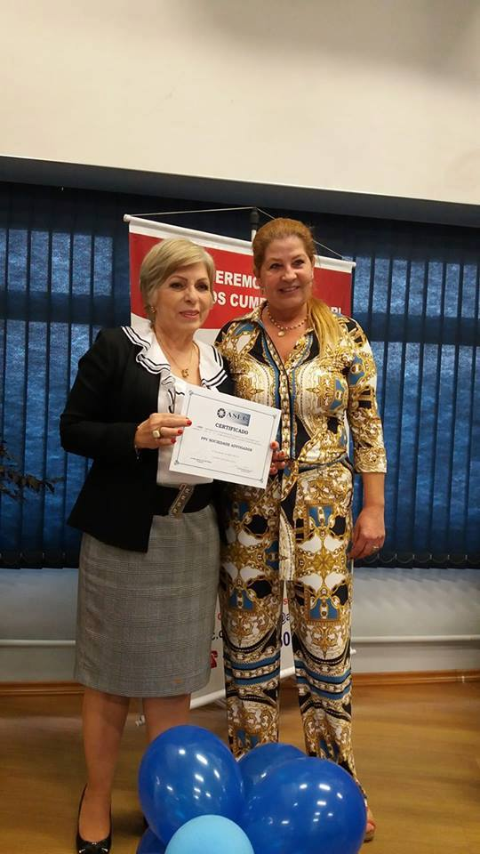
Dra. Ivany Tavares representou o escritório PPV Advogados Associados ontem, na eleição para presidência da ASEC. Loredana Piovesan Glasser, junto…
Ler matéria →Dra. Ivany Tavares, do PPV Sociedade de Advogados, esteve em 8/11, na sede da OAB de Ferraz de Vasconcelos, acompanhando…
Ler matéria →O escritório Ivany Tavares e PPV Sociedade de Advogados parabeniza o candidato eleito a prefeito de Guarulhos Guti Gustavo do PSB. Com…
Ler matéria →Doutora Ivany Tavares e doutor Dennis Pelegrinelli participaram do último encontro dos candidatos à prefeitura de Guarulhos no CIESP, no…
Ler matéria →Os advogados do PPV, Ivany Tavares e Dennis Pelegrinelli estiveram, em 19/10, na reunião mensal da Associação dos Empresários de…
Ler matéria →Dennis Pelegrinelli, em entrevista para a Folha de S. Paulo, comenta a queda de ações por calotes em condomínios em…
Ler matéria →Confira a participação do advogado Dennis Pelegrinelli debatendo o Direito, na TV Cidade, de Guarulhos.
Ler matéria →Nenhuma notícia encontrada. Tente outra palavra ou ano.